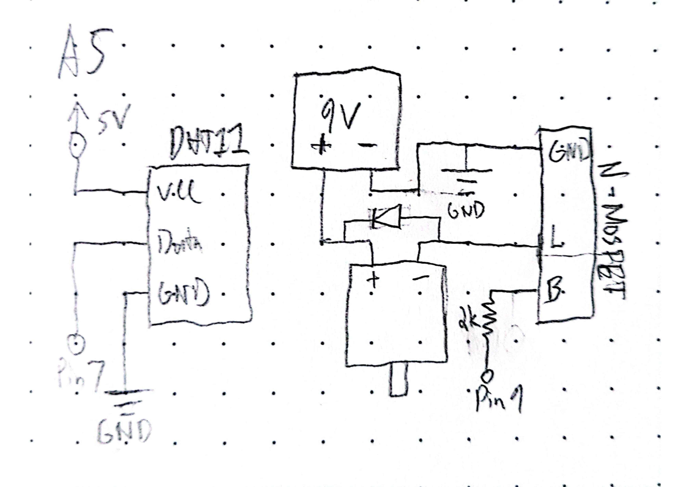
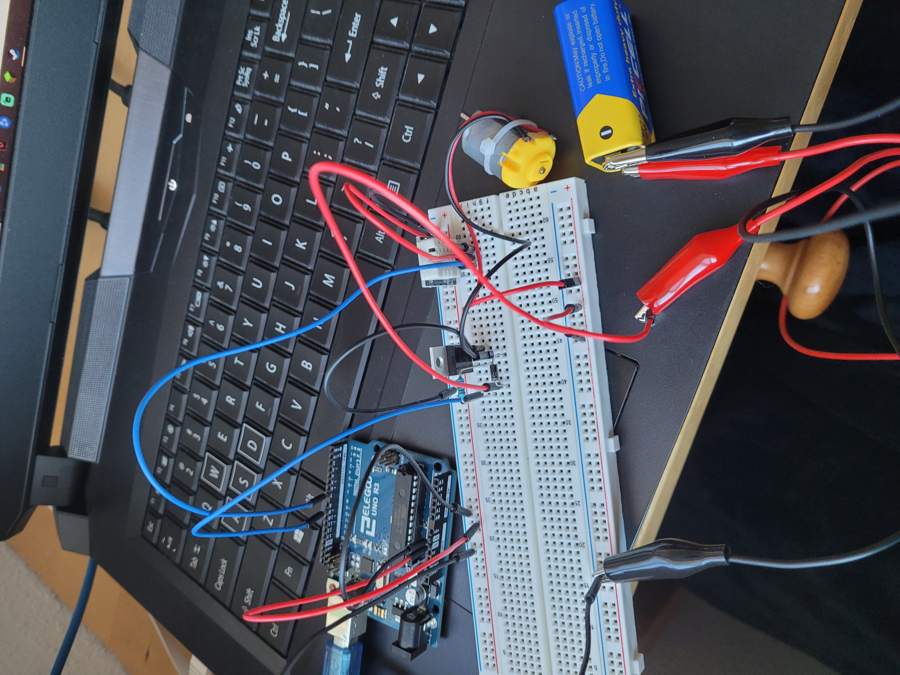

I used a 2k resistor to limit the current to
the transistor

Red wires are power and black are ground. Blue is
input to the arduino.
ground.
/*
5A Higher Voltages and Transistors
Isla Wisemore
*/
//include the temp sensor library
#include <dht.h>
//save the pin used for the transistor
int outPin = 9;
//initialize the tempo sensor
dht DHT;
//link it to pin 7
#define DHT11_PIN 7
//lastTemp tracks the previously recorded temperature
int lastTemp;
void setup()
{
//initialize the transitor pin as an output
pinMode(outPin, OUTPUT);
//check the initial temperature
int chk = DHT.read11(DHT11_PIN);
//save it to lastTemp
lastTemp = DHT.temperature;
}
void loop()
{
//check the temperature
int chk = DHT.read11(DHT11_PIN);
//if the temperature has changed
if (DHT.temperature != lastTemp) {
//turn the transisor on
analogWrite(outPin, 200);
//wait 1 second
delay(1000);
//turn the transistor off
analogWrite(outPin, 0);
//save the new temperature
lastTemp = DHT.temperature;
}
//wait 1 second between measurements
delay(1000);
}
Unfortunately I couldn't get this assignment
to work functionally :(
Here is (most of) the documentation for assignment 5!